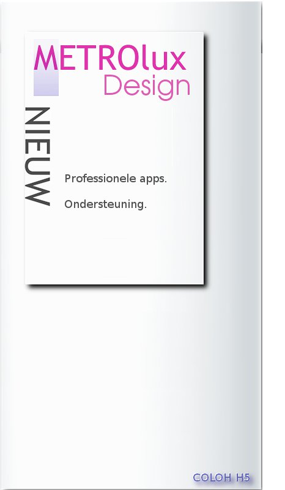
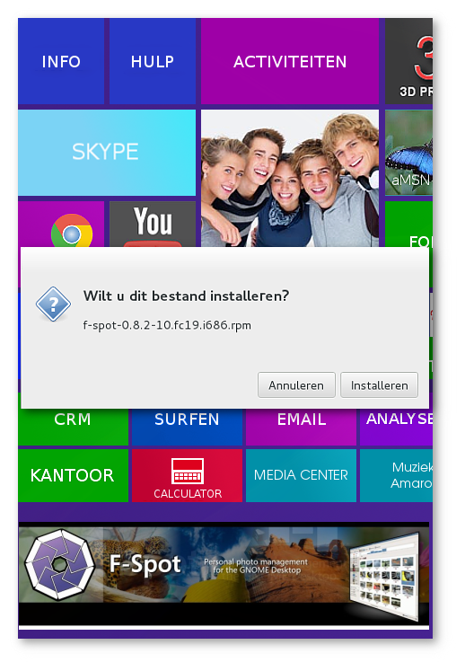
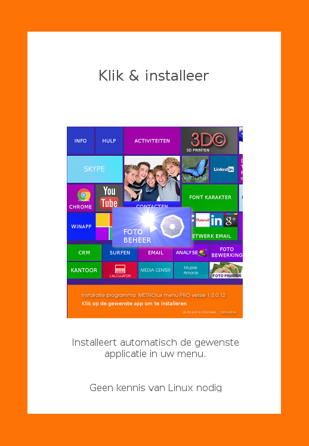
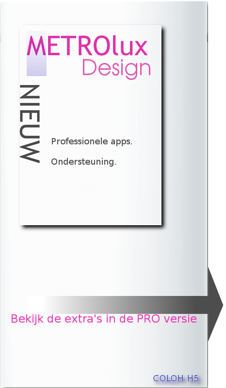

Versie 1.0.0.16 ©2014 A.Greven

INTRODUCTIE METROlux & METROluxPRO-setup
Het METROlux menu is een optimaal gebruikers-vriendelijk menu met
cloud voorzieningen en belangrijke applicaties voor een complete desktop.
De professionele betaalde versie van METROluxPRO heeft een setup voorziening in het menu welke
is voorzien van een geweldige installatie hulp
waarmee de set-up met slechts 1 klik de beste geselecteerde
applicaties welke u op het scherm ziet voor u installeert,

De installatie kunt u direct vanuit uw set-up menu starten door
op een "tegel" te klikken.

Het menu is schaalbaar door dat u zelf bepaald welke
applicatie u wilt installeren vanuit het METROluxPRO set-up scherm.
Bovendien is dit systeem goed te beheren omdat de set-up module
beheerd kan worden.
U kunt nooit het set-up menu starten zonder dat u dit echt wilt.
U herkent een niet geinstalleerde applicatie door het niet starten
van een functie in het gebruikers METROluxPRO menu.
Dus geen meldingen of vertraging op uw scherm.
Selecteer het setup menu en installeer met testfunctie.
meer informatie..
Scrol naar beneden voor de installatie handleiding.
Bedankt voor uw interesse en voor het aankopen van het METROlux menu.
In deze informatie vind u een:
- installatie handleiding.-
- Informatie over de METROluxPRO versies.-
- Tips-
- Informatie over het METROluxPRO-setup menu.
- Hoe kunt u zich als sponsor aanmelden.-
- Hoe bestelt u het METROluxPRO-setup menu.-
- Hoe kunt u adverteren.-
Onze inzet en ons werk kan door partikulier en bedrijven worden gesponsord door o.a. aankoop van extra functionaliteiten, online ondersteuning,en natuurlijk sponsoring waarbij in overleg reclame blokken die wij in onze menus integreren voor bedrijven,clubs of vereningen.
Meer informatie over een link met METROlux
Wilt u ons voor het professionele menu (versie 1.1.0.16),een bijdrage doen,ons sponsoren met reclame of hebt u een andere vraag,neem dan contact op met:
dhr A.Greven telefoon +31(0)633962565 of stuur een mailbericht met uw vraag naar:
METROlux-beheer
|
ONS BELEID BETREFT RECLAME EN PROMOTIES.
Reclames helpen ons indien deze niet de functionaliteiten in het menu hinderen of storend worden ervaren.
Wijzigingen of toevoeging aan de home en pro versie's dienen altijd in overleg met ons en toevoegingen als reclames kan uitsluitend door ons worden geintegreerd.
Reclames door u geintegreerd is niet toegestaan in de door ons gratis verstrekte versies.
U mag verder in de gratis versies logo's aanbrengen en "tegels" wijzigen en distribueren echter de versie en auteur informatie mag u niet verwijderen.
Op de gratis versie is de GPL licentie van toepassing.

Alle te betalen uitgebrachte versies hebben wij ingedeeld in Pro en Home versies.
De performance van het menu is ons een groot goed en dit willen wij beschermen.
EXTRA OPTIE'S in het METROlux menu:
Sectie 1.10.33 handleiding en tips. zijn niet beschikbaar in de gratis versie.
sectie 1.10.34 Extra installatie opties en automatische installer zijn niet beschikbaar in de gratis versie.
sectie 1.10.35 Cursus Libreoffice Writer zijn niet beschikbaar in de gratis versie.
sectie 1.10.36 Cursus Libreoffice Calc zijn niet beschikbaar in de gratis versie.
sectie 1.10.36 Cursus Libreoffice Impress zijn niet beschikbaar in de gratis versie.
sectie 1.10.38 Cursus Libreoffice Draw zijn niet beschikbaar in de gratis versie.
sectie 1.10.39 Cloud voorzieningen zijn niet of beperkt beschikbaar in de gratis versie.
sectie 1.10.40 3D printing voorzieningen zijn beperkt beschikbaar in de gratis versie.
|
Gebruikers-handleiding Versie 1.0.0.16 Gebruiken en instellen van het menu
Versie 1.0.0.16 2014
|
Beste gebruiker,
Bedankt voor uw interesse en voor het aankopen van het METROlux menu.
|
Gebruik nu alle functies met de betaalde versie en maak kennis met de vele extras in uw menu als:
Uitgebreide gebruikers handleidingen tips met uitleg en handige links,Libre-office cursussen,tips en extra functies als cloud voorzieningen en 3D printing.
En meer modules die het gebruikers gemak en de snelheid van het menu verbeteren.
(niet of beperkt beschikbaar in de gratis versie.)
meer informatie..
INSTALLATIE HANDLEIDING:
Om het METROlux menu te gebruiken zoals het is ontworpen moet Gnomenu en cairo-dock zijn geinstalleerd.
Deze modules zijn aanwezig in het
METROluxPRO-setup menu
Echter alleen Gnomenu installeren is voldoende om in Gnome Shell alle functies te kunnen gebruiken.
Dit met uitzondering van de applet die bij installatie van het cairo-dock altijd beschikbaar is in de linker hoek om het menu op te roepen.
Dit oproepen kan handig zijn als u aan het surfen bent op het internet. of een brief aan het schrijven en naar een map bijvoorbeeld afbeeldingen wilt.
Verder is in het cairo-dock de functie van geopende applicatie oproepen toegekent.
De bovengenoemde applet ziet u hieronder:
Het design en de locatie van de applet is bewust gekozen om optimaal gebruik te maken van het menu.
- U bent direct na het activeren van het menu bij de hoofdmappen en de kantoor applicaties.
- De applet is altijd zichtbaar op elk moment en in elke applicatie.
- Met deze applet kunt u op elk moment uw menu activeren.
Activeren van het menu:
BELANGRIJKE TIP!
Zet het cairo-dock NIET op automatisch starten.
De meeste menu's werken dan niet correct.
Wanneer Gnomenu en Cairo-dock is geinstalleerd start u cairo-dock en gaat naar "instellingen" of "configure"
Bij "bestanden" of "files" staat "gnomenu" welke u kunt activeren door aan te vinken.
Nu staat gnomenu in het cairo-Dock.
Nu kunt u het logo van gnomenu (een gnome voetje) uit het dock slepen naar uw bureaublad.
De starter staat nu op het bureaublad.
Selecteer met de rechter muisknop: zichtbaarheid of visibility en kies "Altijd bovenaan" of "Always on top".
Rechtsklik met de muis op het dock (niet de applet).
NU kunt u het dock met alle apps via instellingen "Gedrag"en "positie" verplaatsen naar rechts en overbodige applicaties van het dock verwijderen.
rechtklik met de muis op het dock (niet de applet) en selecteer voor het dock via instellingen "gedrag" en "visibility" "dock verbergen" of "Hide dock whenever it overlap any windows".
In het rechter dock verschijnen dan de applicaties die geopend zijn.
Instellen van de applet en het menu selecteren:
Rechtsklik op de applet en kies "GnoMenu".
Selecteer "edit"
kijk naar de derde optie en zoek in :"/usr/share/gnomenu/Themes/applet/menus.png" deze afbeelding:
Rechtsklik op de applet en kies: "preferences"
selecteervoor het menu: COLOHpro-1.0.0.16
en voor Icons: 3D@-1.0.0.16
DE GROOTTE,ZICHTBAARHEID EN LOCATIE VAN DE APPLET INSTELLEN:
(Alleen bij een installatie van Cairo-dock)
Start in uw Linux-applicatie-menu het Cairo-dock.
Rechts-klik op de applet.
Selecteer de 2e optie: GnoMenu en klik op edit.
Klik op het tabblad "desklet"
Stel de volgende maten in:
Breedte=48 en de hoogte=200.
Kies nu de 5e optie: "toegankelijkheid" of "accesibility" en kies "bovenop" of Keep above"
Bevestigen en afsluiten.
Sleep de applet met de muis naar Links onder in uw scherm.
(LETOP! wanneer er een groot doorzichtig veld verschijnt : DE APPLET NIET LOSLATEN en iets terugtrekken van de linker zijde af.)
Iets misgegaan en u heeft nu een zeer grote applet?
Herhaal de procedure en stel opnieuw de hoogte en breedte van de applet in.
Pak met uw muisaanwijzer uiterst rechts nog eens de applet en sleep deze dichter naar de linkerzijde.
Rechtsklik nu op de applet op de gewenste locatie staat en selecteer:"positie vastzetten"of "Lock position"
gefeliciteerd!
Uw METROlux menu is gereed voor gebruik.
TIP
Het Cairo-dock moet na inloggen op het systeem als eerste worden gestart.
Zet daarom de starter boven aan in favorieten of uw werk balk.
Voor aanpassingen en activeren van uw eigen tiles kunt u contact opnemen met:
dhr A.Greven telefoon +31(0)633962565 of stuur een mailbericht met uw vraag naar:
METROlux-beheer
Benodigde software:
Alle tiles die op het menu zichtbaar zijn zijn vooraf ingesteld om de bijbehorende applicaties te starten.
Indien er een applicatie niet start dan is deze niet op uw systeem geinstalleerd.
Wij hebben ervoor gekozen dat er geen storende popups met meldingen komen.
U kunt een script aanvragen waarmee u alle applicaties via uw terminal eenvoudig kunt installeren of u koopt onze setup hulp (hierboven genoemd waarmee u grafisch met muisklikken elke applicatie afzonderlijk kunt installeren.
Installatie via terminal:
U ontvangt na betaling van €7,50 via uw opgegeven email-adres een script waarmee u met 1 kopie/plak actie alle applicaties installeert.
Installatie volledig automatisch verzorgen met de de betaalde versie:
Deze versie is voorzien van een grafische installer en scripts om dit voor u te regelen.
|

|